| 日付 | 2019年11月10日（日） |
|---|---|
| 山域 | 奥秩父 |
| メンバー | 家族（妻、長女・8歳、長男・6歳） |
| 山行形態 | 子連れ日帰り |
| アクセス | 車 |
| ルート (Map) | 観音峠駐車場 (8:46) - (9:34) 曲岳 - (10:15) 八丁峠 - (10:49) 黒富士 (10:58) - (11:19) 升形山分岐点 - (11:30) 升形山 (12:24) - (12:35) 八丁峠 - (12:45) 車道 - (13:21) 観音峠駐車場 |
前々からずっと登りたかった曲岳～黒富士に行く。
2016年に一度この山を目指したのだが、空がどんよりしており
急遽手前の太刀岡山に目的地を変更した。
その後、息子が成長して自分の足で山を歩くようになり、
この山は遠くなってしまった。
さらに息子がこの山に登れる程度になるまで成長したため、
改めてこの山を目指すことにする。
観音峠の寂しい駐車場に車を停める。標高1390m。
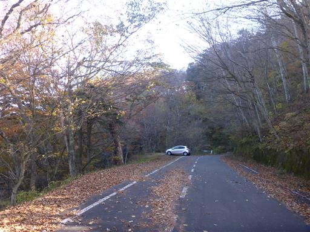
曲岳の登山口は駐車場のすぐ側。気温は5℃で寒い。
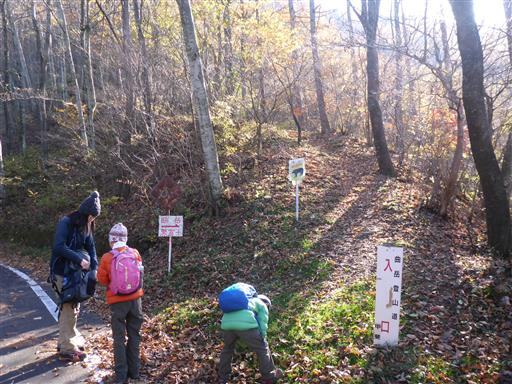
登山道は最初から急登が続く。先週の山とは正反対だ。
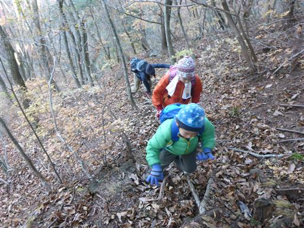
簡単な岩場が現れる。
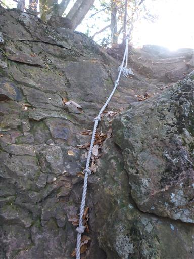
岩場を越えるとものすごい痩せ尾根になる。
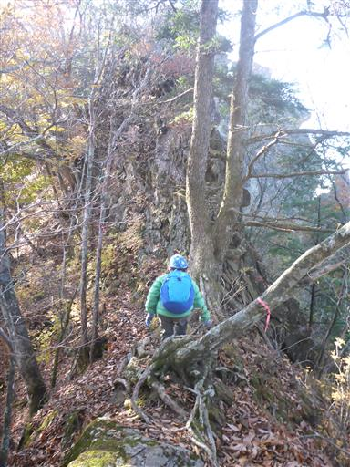
ゴジラの背びれのような鋭い岩。この岩は左から巻いていく。
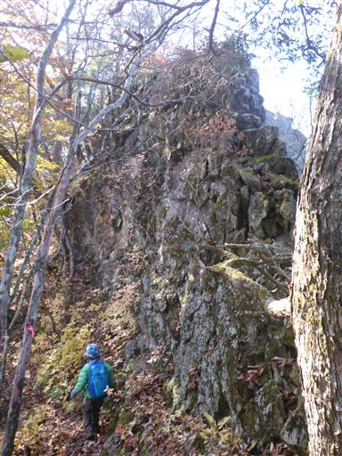
この辺りは紅葉が美しい。
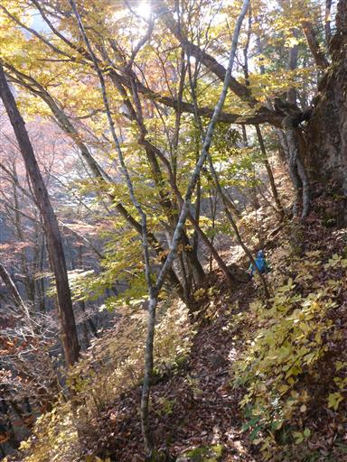
この巻道も急坂で歩くのは容易ではない。
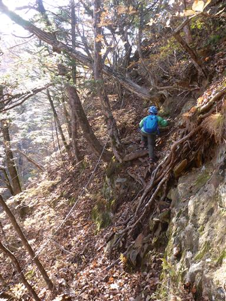
めまい岩に到着。岩の先まで行ってみる。
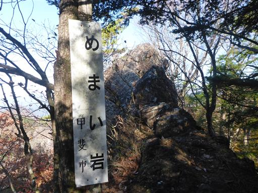
岩尾根を先まで歩く。娘は付いてくるが、息子は怖いらしく自重している。
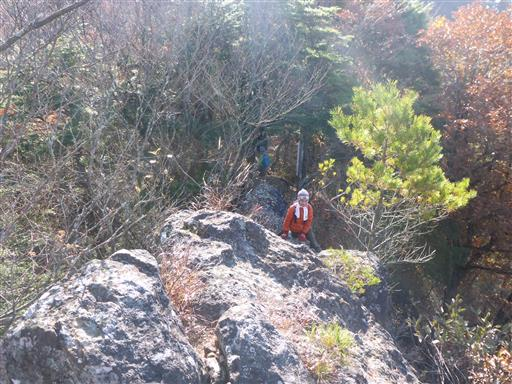
ここからは八ヶ岳がきれいに見える。
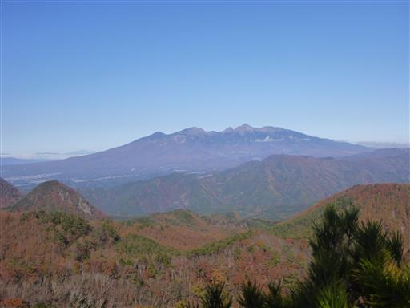
岩の先端はそのまま下方に落ちて行っている。
この岩は先ほどのゴジラの背びれの岩の続きのようだ。
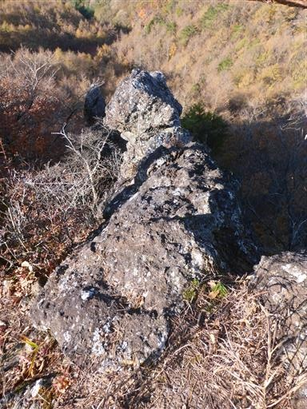
ここから先もまだまだ急斜面の登りが続く。
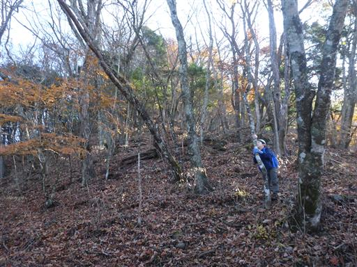
再び岩場。いずれも難易度は高くない。
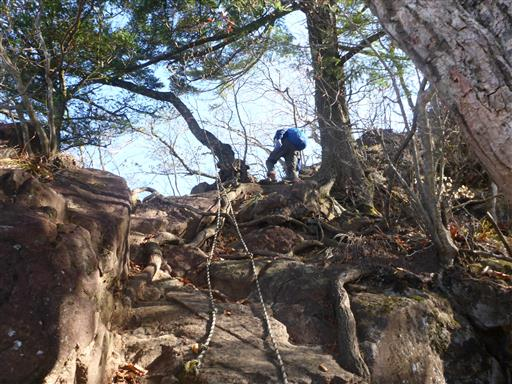
狭い岩と岩の隙間を通り抜ける。
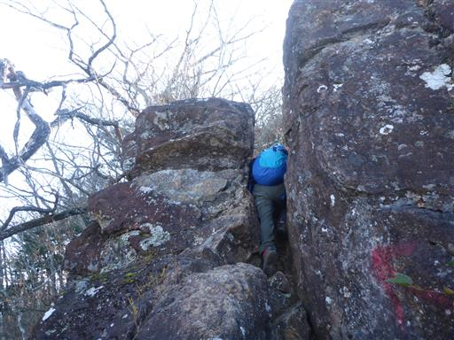
その後は岩場の下り。ここが一番難しい。
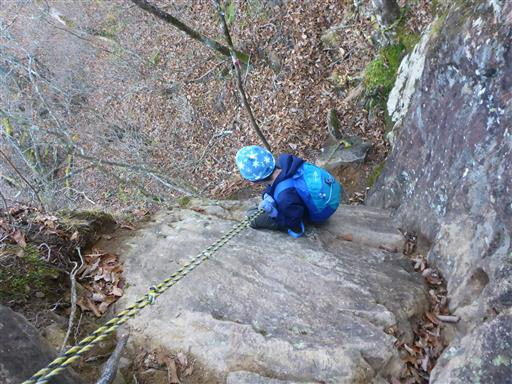
展望ブリッジに到着。
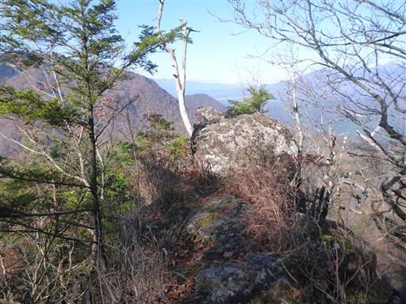
真正面に茅ヶ岳がどっしりと横たわっている。
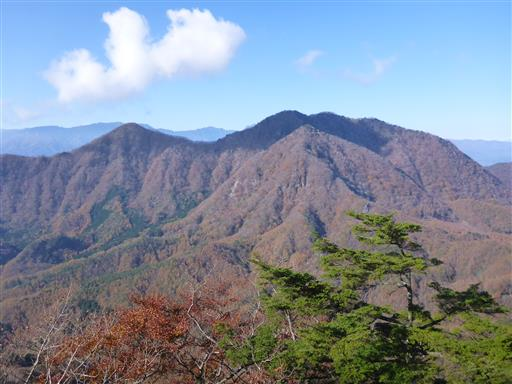
甲府盆地は靄に覆われている。
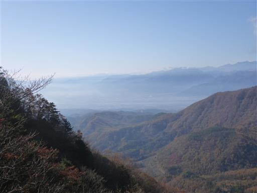
シワシワのキノコ。

山頂に近づき、ようやく傾斜が緩くなる。
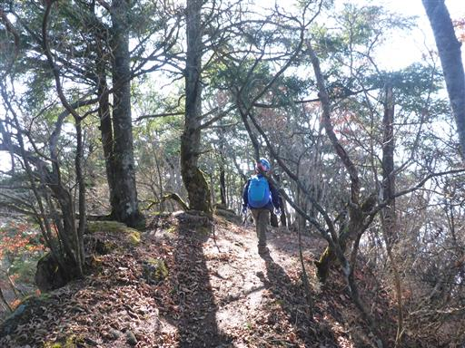
曲岳に到着。標高1642m。
思ったよりもあっさりと山頂に到着した。
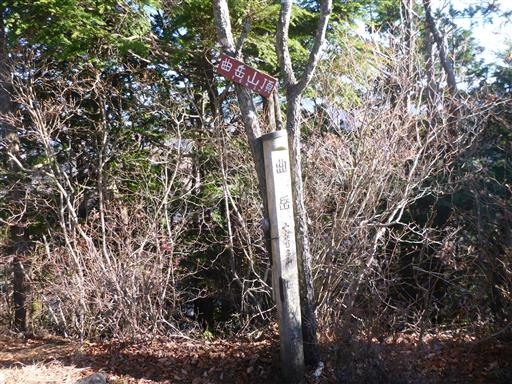
まだそれほど歩いていないので、曲岳では休憩せずに先に進む。
曲岳のすぐ先に展望舞台がある。展望台ではなく、展望舞台だ。
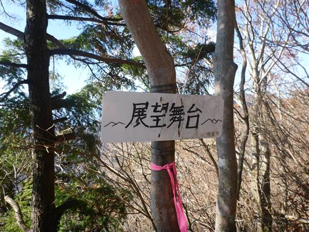
ここからは素晴らしい展望が広がる。
奥に見えるのは富士山、右手前に見えるのは以前登った太刀岡山だ。
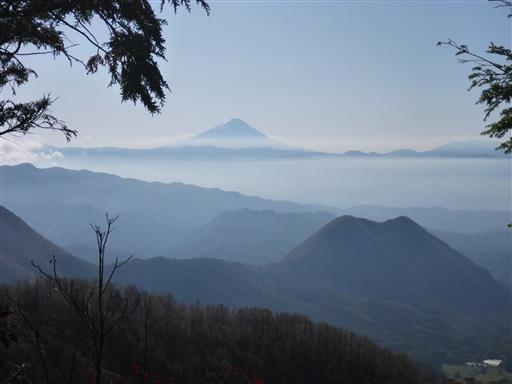
下山道もかなりの急斜面。真っ逆さまという様相だ。
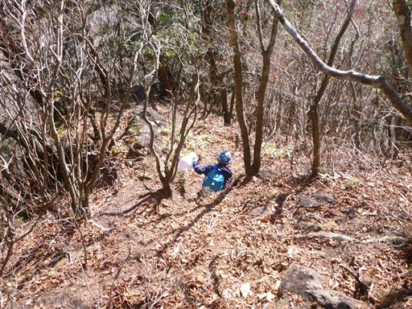
急な斜面を下りきると、そこからは緩やかな尾根道になる。
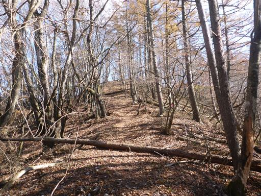
倒木で遊び始める。
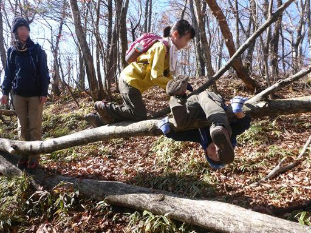
葉がほとんど落ちて、秋～冬の装いだ。
落ち葉を踏みしめて歩いていく。

ススキ。ここも秋の風景だ。
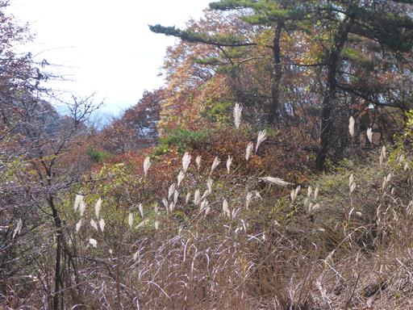
八丁峠に到着。ここから黒富士と升形山を往復するが、
まずは黒富士に向かうことにする。
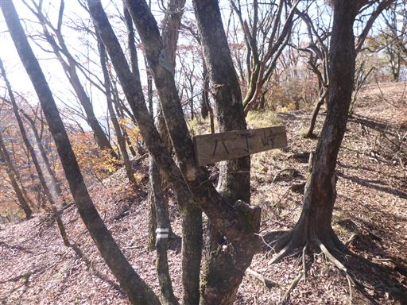
セミの抜け殻。夏からずっと残っているのだろうか？
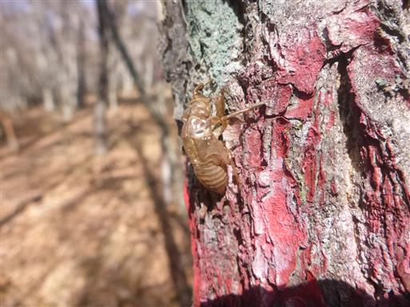
黒富士まではアップダウンのある明るい尾根道。
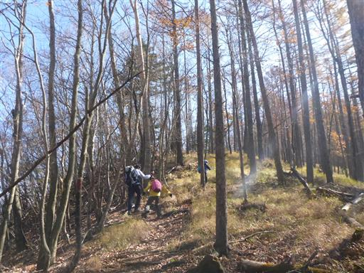
最後だけ少し岩場がある。
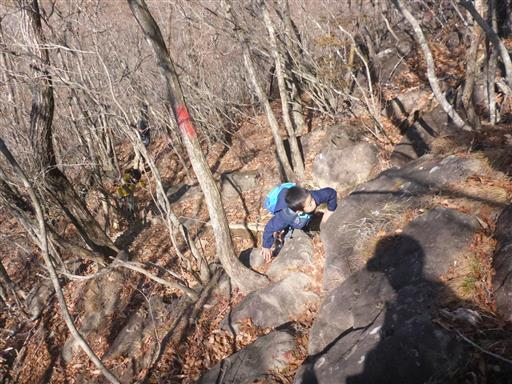
黒富士山頂に到着。標高1635m。
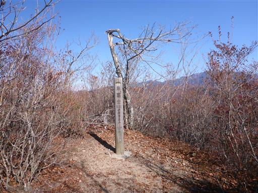
ここにも倒木がある。この倒木は乗り越えないと先に進めない。
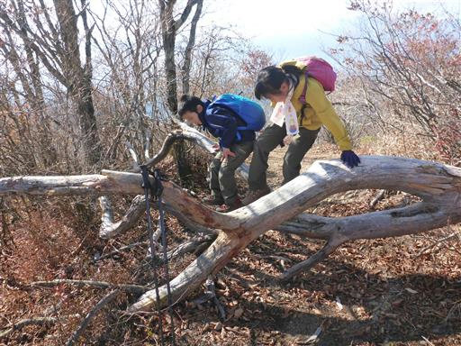
黒富士山頂からはあまり展望が無いが、少し先に展望台がある。
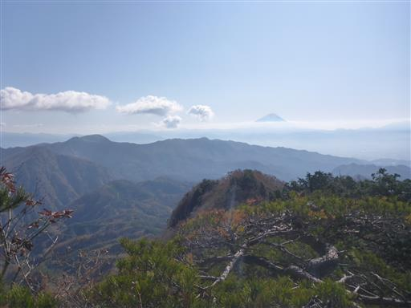
南アルプスの山々。
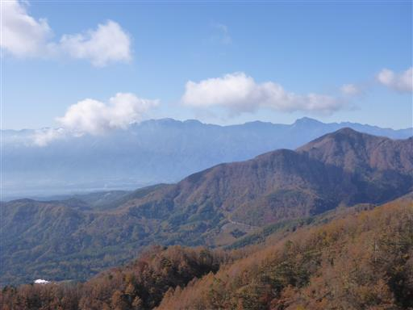
眼下には山間の小さな集落が見える。
どのような生活を営んでいるのだろう？
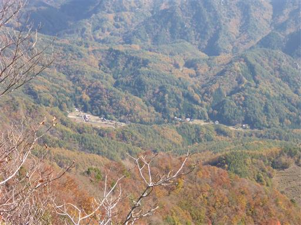
黒富士からの下山は登りとはちょっと異なる道を歩く。
こちらには展望台がある。
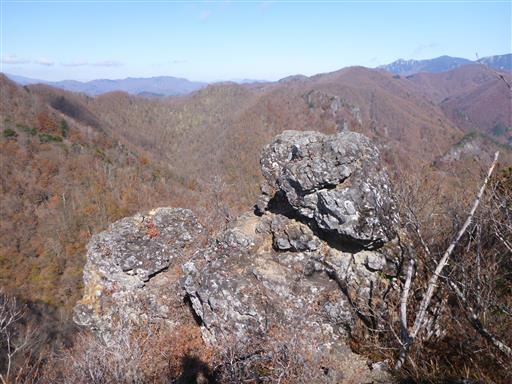
目の前にはこれから向かう予定の升形山が見える。
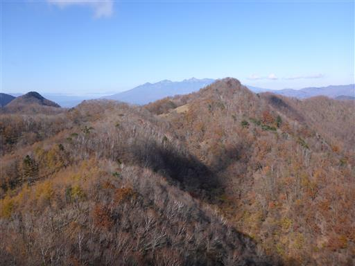
奥秩父の金峰山と瑞牆山もきれいに見えている。
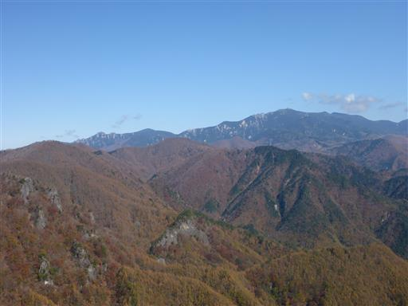
茅ヶ岳と金ヶ岳。堂々とした姿だ。
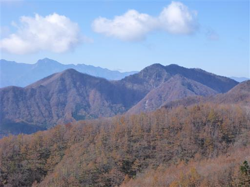
半分枯れて半分生きている木。
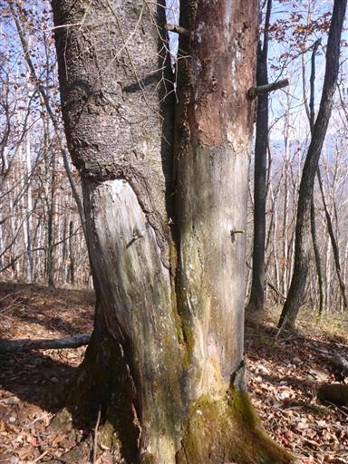
左側の木は葉をつけていて確かに生きている。
半分生きて半分死んでいるとは、どんな気分なのだろう？
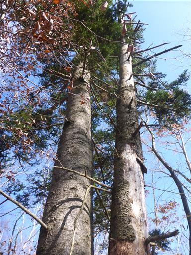
黒富士を下山して次は升形山を目指す。
こちらはそこそこ傾斜が急な一直線の登りだ。
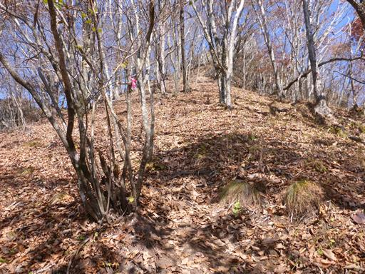
登りは長く続かない。一登りで升形山に到着。標高1650m。
ここが本日の最高峰だ。
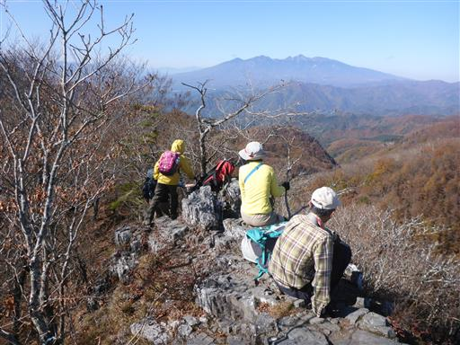
山頂は岩峰で、端に小さな山頂標識が置かれている。
一番展望の良さそうな山頂だったので、ここで昼食をとることにしたのだが
山頂が狭すぎるため、黒富士の方が休憩ポイントとしては適していた。
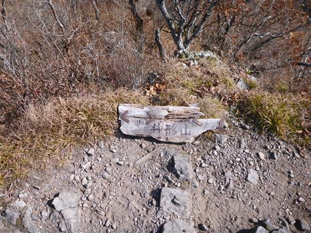
この山は360度の展望台。今度は先ほど登った黒富士を望む。
背後に見えるのは富士山だ。富士の隣に並ぶ黒い山なので、黒富士と名付けられたようだ。
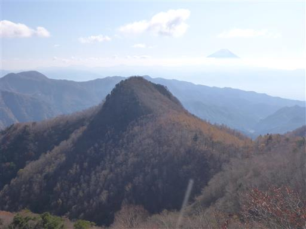
富士山のアップ。雲海の上に頭を出している。
もう少し雲が低い方が美しい。
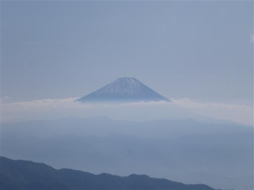
こちらは南アルプス。北岳はもう雪で真っ白だ。
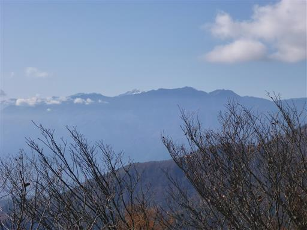
瑞牆山。岩だらけの独特の山容だ。
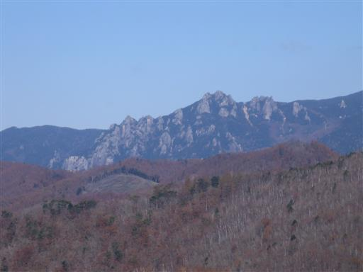
八ヶ岳。左から権現岳、阿弥陀岳、赤岳、横岳だ。
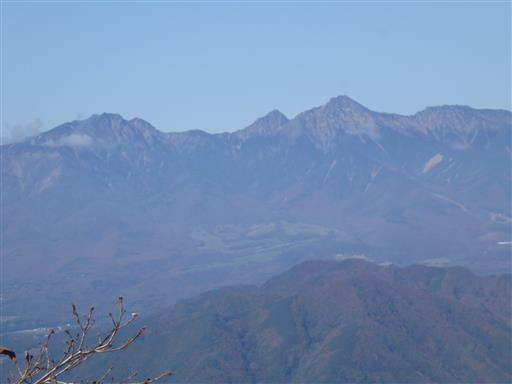
遠くには浅間山が見えている。その右は男山と天狗山だ。
足元に見える岩壁。ところどころに、このような岩峰が見られる。
下山前に、雲に覆われていた金峰山も顔を出す。
山頂の五丈石が目立っている。
升形山から八丁峠に下山したら、そこからは曲岳を経由せずに
車道に下りる道を歩く。
丸太と石でできた堰堤。こんな堰堤は初めて見た。
車道まで下りてくる。ここにも駐車スペースがある。
ここを起点に山登りをすると、体力的にはかなり楽だ。
ここからは30分程度、車道を歩いて駐車場を目指す。
周囲の紅葉が美しい。
実が3裂している。一体何の植物だろう？
稜線はほとんど紅葉が終わっていたが、車道は正に今が旬だ。
落ち葉も美しい。歩くとサクサク音がする。
駐車場に戻ってくる。車の数は増えている。
今回は三山に登ったが、どれもあまり登りが長くなく、思ったより楽な登山だった。
あちらこちらに絶景ポイントがあり、曲岳への登山道も面白く、充実した山登りだった。